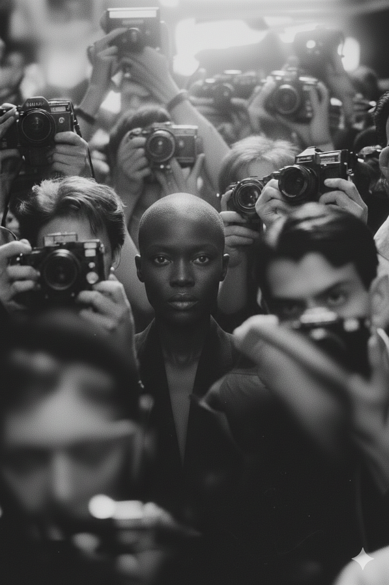
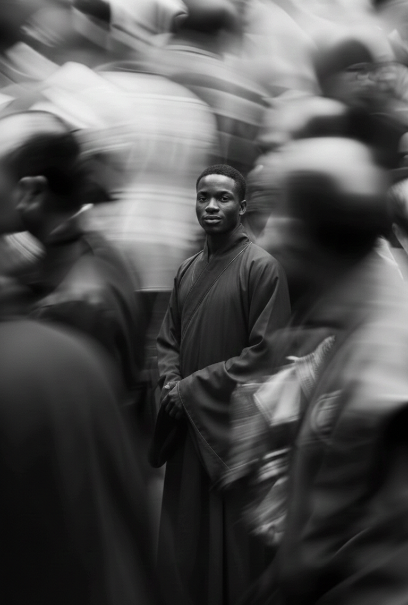
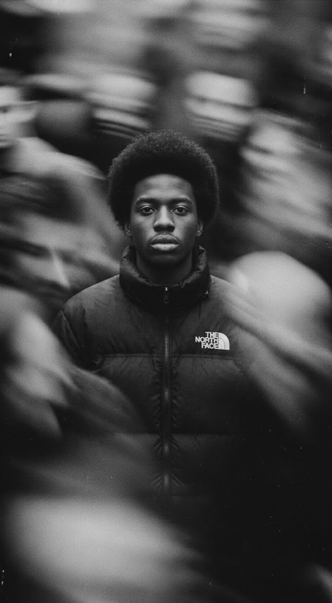

URB CONCEPT — Estúdio Criativo Multidisciplinar
Identidade visual e produção audiovisual sob medida para o seu negócio. Resposta e orçamento rápido pelo WhatsApp.
Fale diretamente com o diretor de criação no WhatsApp e receba um diagnóstico em até 24h. Precisão técnica, narrativa e identidade funcional — sem clichês, sem excessos.
Conversar via WhatsAppO mundo passa. A ideia fica.
Em um mercado saturado de ruído e execuções descartáveis, construímos ecossistemas visuais sólidos. A estética sem estratégia é passageira; a estrutura bem desenhada permanece.
Atuamos na interseção entre comunicação visual, direção de arte e linguagem audiovisual. Desenvolvemos soluções com rigor técnico e acabamento refinado para empresas e projetos que buscam autoridade real no mercado.


Marcas construídas com método.
Cada projeto abaixo parte de um diagnóstico de negócio e termina em um sistema aplicável. Selecione um case para ver as lâminas do projeto e a leitura técnica da entrega.
Quer acelerar seu projeto?
Atendimento 100% online. Deixe seu nome, WhatsApp e o serviço que precisa — ou inicie uma conversa sem compromisso direto no nosso WhatsApp.
Iniciar conversa no WhatsApp